Finally, I can guide you through the details of our core research projects. Although some of you might find it a bit surprising or even disappointing, we do not actually trigger actual nuclear fusion reactions inside our laboratory. Instead, we carry out fundamental research necessary to realize future commercial fusion reactors. Specifically, we utilize various advanced laser and microwave diagnostics on the Large Helical Device (LHD) to investigate the complex plasma confinement states.
As discussed in Section 2-2, achieving nuclear fusion requires confining a plasma at an extraordinarily high energy state. To do this, fuel particles—deuterium and tritium in future commercial reactors, or light hydrogen in current experimental devices—are first ionized into a plasma state where electrons and ions are separated, and are then trapped along twisted magnetic field lines. We inject external laser beams and microwaves into this volume, which act much like a physician's stethoscope. Just as a doctor listens to a patient's heartbeat to evaluate their physical condition, we analyze the "health" of the plasma. Doctors also sometimes perform percussion by gently tapping a patient's chest; similarly, we introduce controlled external perturbations into the plasma to observe how they propagate, uncovering its internal characteristics. In a sense, you could say our laboratory is training "plasma physicians." However, beyond just diagnosing the plasma, we build the very stethoscopes ourselves—developing unique laser and microwave diagnostic hardware from scratch. Because plasma diagnostics are highly specialized, there are no commercial off-the-shelf products available. Therefore, we must independently determine the necessary requirements, design the optical and electronic systems, assemble them, operate them during campaigns, and analyze the resulting datasets. Finally, we deeply investigate the physics and underlying principles behind the analyzed results.
Prospective students who are interested in pure plasma physics, advanced laser technology, or microwave engineering are more than welcome to join us, even if you do not have a strong initial passion for nuclear fusion itself. To be frank, university professors are generally brilliant individuals, and many of them place far greater value on the immediate interest of pure physics than the macro-scale position of a project. However, it is my sincere hope that students in our lab will engage in their research with a solid understanding of both the vital importance of fusion energy and the major scientific challenges it currently faces. When I was a college senior, I joined a laser diagnostics laboratory specifically because I wanted to study nuclear fusion. Because I felt a strong sense of romance toward fusion as a clean energy source for humanity, I initially felt a bit disappointed by the massive gap between actual fusion reactions and the daily laboratory routine. Furthermore, since my thesis topic focused purely on the fundamental engineering development of a diagnostic instrument, I didn't even get to touch real plasma for a while, causing me significant dilemma and frustration. However, as I pushed deeper into the engineering development, I discovered the true fascination of laser diagnostics. The deep knowledge of measurement systems I acquired during my Master's program proved exceptionally valuable throughout my subsequent scientific career. While the initial trigger to start research is driven by a grand dream, a romance, or a sense of purpose, the true driving force that sustains your research day by day is the immediate interest of the work itself. You might experience the same kind of dilemma when you first arrive here, but even if things seem unclear at first, if you dive into your research topic with absolute determination, you will surely unlock the true fascination of scientific research by the time you complete your Master's degree.
Currently, our laboratory is driving the development of three major cutting-edge diagnostic systems to investigate and understand magnetically confined plasmas: a $\mathrm{CO_2}$ laser imaging interferometer to measure local electron density profiles and macroscopic electromagnetic instabilities; a $\mathrm{CO_2}$ laser two-dimensional phase contrast imaging (2D-PCI) system to evaluate microscopic density turbulence; and a microwave collective Thomson scattering (CTS) system to diagnose bulk and fast ion dynamics.
6-1. $\mathrm{CO_2}$ Laser Imaging Interferometer
Since the initial phase of the LHD project, a 13-channel far-infrared (FIR) laser interferometer utilizing a wavelength of $119\,\mu\mathrm{m}$ has been operational as a standard diagnostic. Because the FIR interferometer exhibits exceptional phase sensitivity and stable operation, it has contributed significantly to tracking line-averaged density monitors and evaluating density profiles in relatively low-density regimes. In particular, all the baseline data used to uncover the spatial structure of electron density and the physics governing particle transport [17] were recorded by this FIR system. However, this conventional diagnostic faced two major technical limitations. First, it completely lost its measurement capability when the plasma density entered a high-density regime. For instance, as shown in Figure 6-3(a), during a high-density experiment where solid hydrogen ice pellets are injected in succession, the FIR system tracks the density perfectly up to a core density of approximately $6 \times 10^{19}\,\mathrm{m^{-3}}$, but abruptly fails beyond that threshold. This failure occurs because the elevated density gradient generates a strong refractive effect, bending the laser beam away from the detector elements. Furthermore, the rapid density variations introduce extremely sharp phase shifts that exceed the tracking speed of the analog phase-detection circuits. Second, although the system features a 13-channel framework, only 10 chords actually intersect the plasma volume, which was insufficient for capturing highly detailed local spatial structures.
To overcome these challenges, our laboratory developed a novel imaging interferometer system. This new architecture introduces two revolutionary upgrades compared to the conventional FIR diagnostic. The first is the choice of the light source. Instead of the $119\,\mu\mathrm{m}$ FIR laser, we implemented a carbon dioxide ($\mathrm{CO_2}$) laser operating at a wavelength of $10.6\,\mu\mathrm{m}$—an order of magnitude shorter. While developing the FIR source required enormous time and effort because there were no commercial products, $\mathrm{CO_2}$ lasers are widely mass-produced for industrial applications, meaning we could leverage highly matured and exceptionally stable laser technologies. The second upgrade is the optical layout. While the conventional FIR system splits a single beam into individual chords to be recorded by discrete detectors, our $\mathrm{CO_2}$ system expands the laser into massive sheet beams ($30 \times 250\,\mathrm{mm}$ and $30 \times 280\,\mathrm{mm}$). We designed an imaging optical system utilizing a complex arrangement of lenses, focusing the full image of the sheet beam onto a 16- or 32-element detector array, much like a camera or telescope. Because it records a continuous spatial image of the plasma, it was named an "imaging interferometer." By implementing three separate sheet beams, we successfully expanded the system to a total of 80 channels. This channel density represents the highest resolution among all high-temperature plasma confinement devices currently operating worldwide.
By shortening the laser wavelength by an order of magnitude, the beam bending caused by plasma refraction is reduced significantly—the angle of refraction is reduced to exactly 1/10. However, this creates a trade-off: as shown in Equation (5-1), the plasma-induced phase shift is linearly proportional to the wavelength, meaning the target phase signal also drops to 1/10. Even more critically, shortening the wavelength severely amplifies the phase noise generated by minute mechanical vibrations of the diagnostic framework, which was negligible for the FIR system. Although the entire optical framework is isolated on air springs, a relative mechanical vibration of approximately $1\,\mu\mathrm{m}$ still exists between the upper and lower structures. For the $119\,\mu\mathrm{m}$ FIR wavelength, a $1\,\mu\mathrm{m}$ vibration represents only 1/100 of a wavelength; however, for the $10.6\,\mu\mathrm{m}$ $\mathrm{CO_2}$ laser, it represents nearly 1/10. Consequently, the vibration-induced signal-to-noise ratio (SNR) of the $\mathrm{CO_2}$ imaging interferometer is 100 times worse than that of the FIR system. To solve this severe noise problem, we introduced a continuous-wave YAG laser operating at a wavelength of $1.06\,\mu\mathrm{m}$ and aligned it to share the exact same optical axis as the $\mathrm{CO_2}$ laser. Because the plasma phase shift at the $1.06\,\mu\mathrm{m}$ wavelength is practically negligible, the YAG interferometer records only the pure mechanical vibration noise. Therefore, by recording the combined plasma and vibration phase shift with the $\mathrm{CO_2}$ channels and subtracting the pure vibration phase noise recorded by the YAG channels, we successfully isolated the pure plasma-induced electron density phase shift with high precision.
Figure 6-1 illustrates the comprehensive $\mathrm{CO_2}$ laser imaging interferometer system. The massive optical platform shown in (a) is supported by the air-spring vibration isolation framework. Diagram (b) displays the cross-section of the 80 viewing chords intersecting the plasma volume. As shown in (c), three separate sheet beams and one narrow beam for heterodyne local oscillation are injected. The lower section of the framework houses the $\mathrm{CO_2}$, YAG, and HeNe laser sources as shown in (d). Because the $\mathrm{CO_2}$ and YAG beams are completely invisible to the human eye, alignment is exceptionally challenging; thus, a visible red helium-neon (HeNe) laser ($\lambda = 633\,\mathrm{nm}$) is co-axially aligned with the main beams to act as a visual guide. Acousto-optic modulators (AOM) are implemented to shift the frequencies for heterodyne detection. The $\mathrm{CO_2}$ beams are shifted to 40 MHz and 40.1 MHz to yield a 0.1 MHz beat signal, while the YAG beams are shifted to 40 MHz and 40.99 MHz to yield a 990 kHz beat signal. The phase shifts are recorded simultaneously using two independent pathways: an analog phase-detection circuit that tracks the zero-crossings of the beat waveforms, and a high-speed digital sampling system operating at 1 MHz to calculate phase data numerically.
The upper section of the framework houses three independent detector enclosures as illustrated in (d). The $\mathrm{CO_2}$ channels utilize photoconductive detectors cooled with liquid nitrogen to maximize sensitivity, while the YAG channels utilize high-speed avalanche photodiodes. The vibration-compensating YAG interferometer features 5 channels per sheet beam, totaling 15 channels across the array.
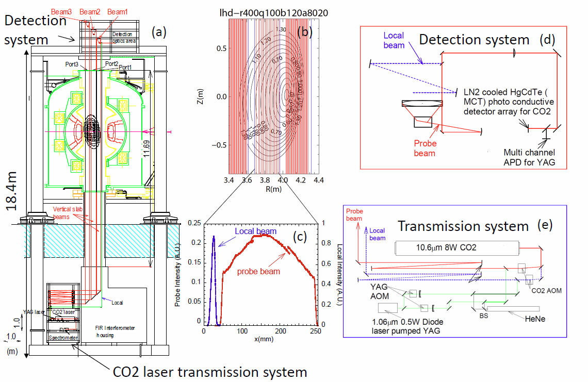
Figure 6-2 demonstrates the outstanding performance of our dual-color vibration compensation system. The blue line represents the raw phase data recorded by the $\mathrm{CO_2}$ channels, which is completely dominated by severe vibration noise. In contrast, the red line represents the net plasma phase signal after subtracting the YAG vibration data, showing a dramatic reduction in noise and a pristine reconstruction of the plasma phase shift.
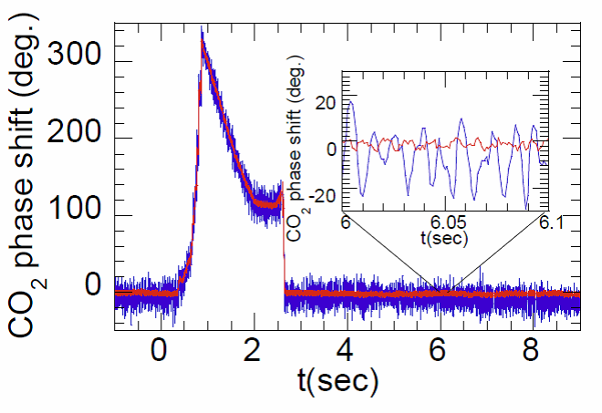
Figure 6-3 compares the density tracking capabilities during a consecutive hydrogen ice pellet injection experiment. As shown in Figure 6-3(a), the conventional FIR interferometer experiences complete phase fringe-loss and goes into a measurement blackout immediately following the pellet injection. In contrast, as shown in Figure 6-3(b), our newly developed $\mathrm{CO_2}$ imaging interferometer tracks the rapid density rise flawlessly across every single viewing chord without experiencing any signal degradation.
Figure 6-4 shows the local electron density profiles reconstructed via Abel inversion from the line-integrated data recorded by the $\mathrm{CO_2}$ imaging interferometer. For validation, the local electron density profile captured by the independent YAG laser Thomson scattering diagnostic is plotted on the same graph. The absolute magnitude of the Thomson scattering data is calibrated so that its spatial profile matches the line-integrated density of a microwave interferometer chord. While a slight discrepancy is visible at the magnetic axis, the overall spatial profile shapes show excellent agreement between the two independent diagnostics. Although Thomson scattering provides excellent localized point measurements, its data points naturally exhibit statistical scatter, and because it is a pulsed diagnostic, it cannot capture continuous temporal evolutions. In contrast, interferometry measures the pure phase shift, meaning the data is completely unaffected by laser intensity variations or detector sensitivity degradation, and it provides uninterrupted temporal resolution throughout the discharge. However, a limitation of Abel inversion is its strict reliance on the assumption that electron density remains constant along any given magnetic surface; if a macroscopic instability deforms this concentric geometric structure, the local density profile cannot be accurately inverted.
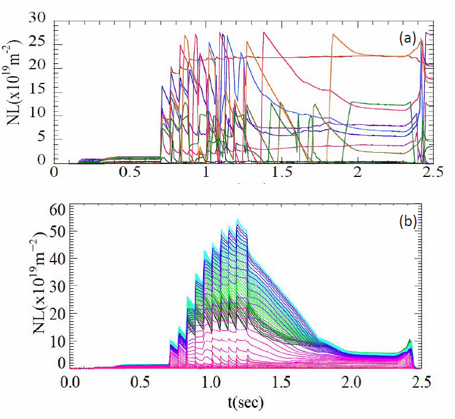
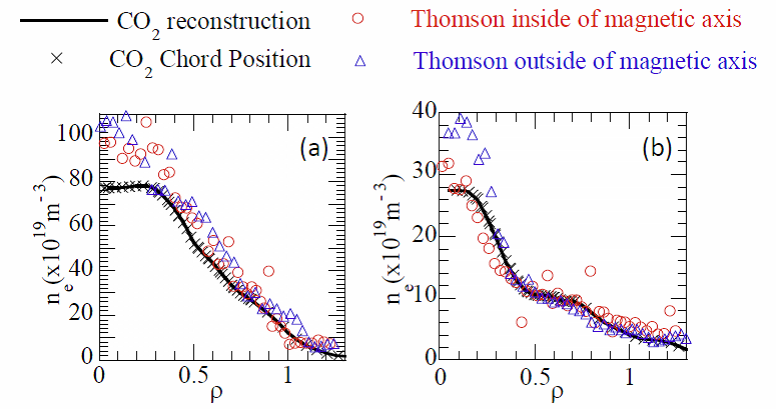
In addition to evaluating macro-scale density profiles, the imaging interferometer can capture rapid density fluctuations within the plasma core. While plasma fluctuations span a wide range of frequencies and scales, the interferometer is uniquely suited to capturing large-amplitude macroscopic electromagnetic instabilities. If these macroscopic modes grow unchecked, they can trigger a global collapse of the plasma. This is a critical issue for tokamaks, where a severe instability can trigger a sudden disruption, completely terminating the plasma current and inducing immense electromagnetic forces that risk catastrophic mechanical damage to the device structure. In contrast, helical devices like the LHD maintain their confinement fields entirely through external superconducting coils, eliminating the risk of destructive global disruptions, though they can still experience localized internal collapses.
Figure 6-5 shows the precursor fluctuation signals recorded immediately prior to a localized internal plasma collapse triggered by consecutive pellet injections. As shown in (c), the core density drops abruptly following the collapse, while the edge density increases. Immediately prior to this collapse, a distinct oscillatory fluctuation develops and amplifies rapidly as seen in (e), acting as a clear precursor to the internal collapse. Reconstructing the spatial structure reveals that this precursor mode is completely absent in the chords passing inside the magnetic axis (a), and is tightly localized in the outer region of the plasma cross-section (d).
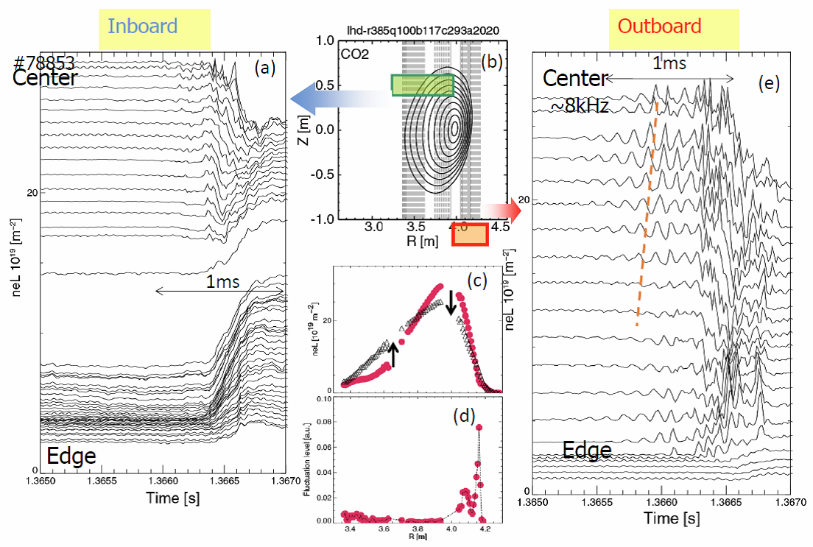
6-2. $\mathrm{CO_2}$ Laser Two-Dimensional Phase Contrast Imaging (2D-PCI)
The second diagnostic system utilizing our high-power $\mathrm{CO_2}$ laser source is the $\mathrm{CO_2}$ laser Two-Dimensional Phase Contrast Imaging (2D-PCI) system, which is designed to measure microscopic electron density turbulence. Moving forward, we will refer to this diagnostic simply as the 2D-PCI.
First, let us look at the nature of microscopic turbulence within a magnetized plasma. Why is measuring turbulence so vital? It is because turbulence is widely believed to be the primary driver behind the degradation of plasma confinement. As illustrated in Figure 6-6(a), the fuel ions and electrons are confined by spiraling tightly around magnetic field lines. As explained on the "Large Helical Device" page, twisting these field lines into a toroidal structure establishes a stable magnetic trap. However, particles cannot be confined indefinitely. Coulomb collisions between electrons and ions cause a gradual cross-field diffusion toward the outer boundary. This collision-driven transport can be calculated theoretically based on the specific geometry of the magnetic field lines. In a simple straight magnetic cylinder, this baseline transport is called "classical diffusion," whereas in a twisted toroidal geometry, it is called "neoclassical diffusion." While neoclassical diffusion can be described analytically for simple tori, the complex 3D magnetic configuration of modern helical systems requires large-scale numerical computations.
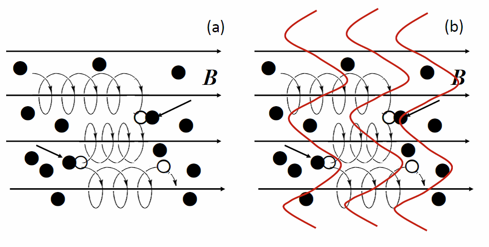
Unfortunately, experimental measurements on actual confinement devices reveal that the real cross-field transport coefficients are often orders of magnitude larger than the theoretical neoclassical baseline. Depending on the specific device and magnetic configuration, the real diffusion coefficient can be more than ten times higher than the neoclassical value. Because this massive transport cannot be explained by neoclassical theory, it is called "anomalous transport." Figure 6-7(a) displays the profile of the diffusion coefficient measured on the LHD; across almost the entire plasma volume, the real experimental value stands more than an order of magnitude higher than the neoclassical baseline. This anomalous transport is driven by microscopic plasma turbulence, where the turbulent eddies amplify cross-field transport by overlaying an convective mixing effect on top of standard collisional diffusion, as shown in Figure 6-6(b). Every thermodynamic plasma parameter—including electron density, ion density, electron temperature, ion temperature, electrostatic potential, and local magnetic field—possesses a turbulent fluctuation component. For example, as shown on our "Plasma Experiments" page, when the local turbulence amplitude is suppressed, the local electron density immediately begins to climb. This directly demonstrates that suppressing turbulence reduces the anomalous transport coefficient, resulting in a self-evident improvement in plasma particle confinement.
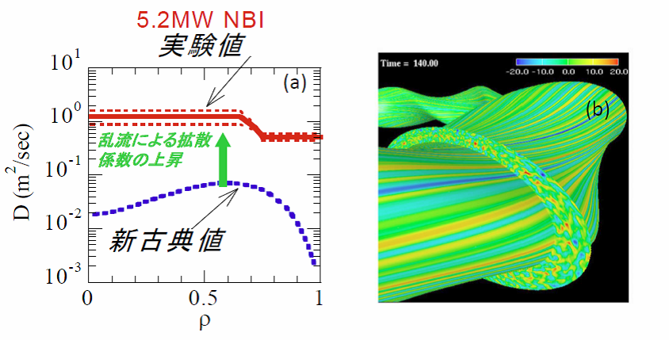
What does this microscopic plasma turbulence actually look like? High-performance gyrokinetic numerical simulations executed on supercomputers reveal a structural picture like the one shown in Figure 6-7(b). Bounded within the poloidal cross-section, the eddies form a highly complex, chaotic chaotic pattern that fits our standard image of fluid turbulence. However, if we track the structure along the toroidal direction—which corresponds to the direction of the magnetic field lines—we notice that the exact same turbulent pattern extends continuously over long distances. Do you know "Kintaro-ame"? It is a traditional Japanese cylindrical candy crafted so that no matter where you slice it, the exact same face of Kintaro appears on the cross-section. Magnetically confined plasma turbulence possesses an identical "Kintaro-ame" characteristic. Because electrons and ions stream at immense velocities parallel to the magnetic field lines, all thermodynamic parameters (temperature, density, potential) quickly equalize along the field lines, smoothing out parallel gradients. Microscopic turbulence inherits this property: as visualized in Figure 6-7(b), the turbulent wave structures remain perfectly correlated parallel to the magnetic field, resulting in an exceptionally long parallel wavelength ($k_\parallel \approx 0$). While conventional fluid turbulence is inherently a 3D process, magnetized plasma turbulence is highly anisotropic, forming a quasi-2D structure perpendicular to the local magnetic field lines.
Directly measuring these microscopic turbulent structures in high-temperature experiments is an extraordinary diagnostic challenge. First, the amplitude of the turbulent fluctuations is exceptionally small—inside the core plasma, the relative density fluctuation level $\tilde{n}_e/n_e$ is typically 0.1% or less. While large-amplitude macroscopic modes like internal collapses can be captured by standard heterodyne interferometry, tracking microscopic turbulence requires a completely different approach due to its minute phase signature. To overcome this, we implement the "phase contrast" method, a technique optimized for visualizing micro-scale phase variations. Figure 6-8 illustrates the underlying physical principle of this diagnostic.
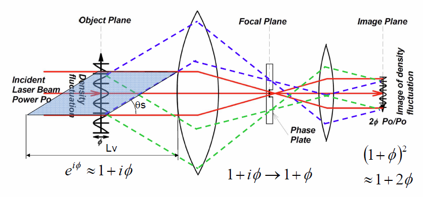
A wide laser beam is injected through the plasma. As it encounters microscopic electron density fluctuations, a small fraction of the laser light is diffracted (scattered). Because this scattering is driven by the collective, wave-like movement of the electron cloud tracking the turbulent fields, it can be viewed as a regime of collective Thomson scattering. Since the plasma is completely transparent to the laser wavelength, passing through a turbulent density wave alters the local refractive index, shifting the phase of the laser light. Although this phase shift could theoretically be captured by an interferometer, the amplitude of the shift is too small to be resolved. To unlock this signal, we implement an elegant optical trick: as shown in Figure 6-8, both the unperturbed transmitted beam (solid red path) and the diffracted scattered beams (dotted blue and green paths) are collected and focused by a primary lens. Because the scattered light carries a diffraction angle, it focuses at a position slightly offset from the central transmitted beam on the focal plane. By installing a specialized optical element called a "phase plate" at this focal plane, we introduce a precise 90-degree ($\pi/2$) phase shift between the central transmitted beam and the outer scattered beams. This phase shifting converts the minute phase modulation into a measurable intensity modulation on the downstream imaging plane. By positioning a high-speed detector array at this imaging plane, we can record the microscopic turbulence from the voltage fluctuations of the detector elements. Without this phase plate, the interference term vanishes, and the detector would record only a flat, unmodulated intensity, rendering the turbulence invisible.
This phase contrast technique was originally invented in biology to observe living cells under optical microscopes. Because many biological cells are completely transparent, they are invisible under standard microscopes; implementing the phase contrast method allows scientists to visualize their intricate internal structures. Recently, this technique has also been successfully adapted for advanced electron microscopy.
To diagnose plasma turbulence, we implement a $\mathrm{CO_2}$ laser source operating at a wavelength of $10.6\,\mu\mathrm{m}$. While other wavelengths could theoretically be used, the $10.6\,\mu\mathrm{m}$ regime offers major practical advantages: highly stable industrial laser units are readily available, multi-element detector arrays optimized for high-speed imaging are highly matured, and exceptional optical materials like zinc selenide (ZnSe) can be manufactured for window ports and lenses. Furthermore, if we select a wavelength shorter than $10.6\,\mu\mathrm{m}$, the plasma-induced phase shift drops linearly, weakening the signal; conversely, selecting a longer wavelength broadens the diffraction angles too much, requiring massive optical windows that cannot be installed on a high-vacuum vessel. Considering these factors, the $10.6\,\mu\mathrm{m}$ wavelength represents the optimal choice. This high-power $\mathrm{CO_2}$ laser can drive both the 2D-PCI and the heterodyne imaging interferometer simultaneously, providing ample optical power for both diagnostics.
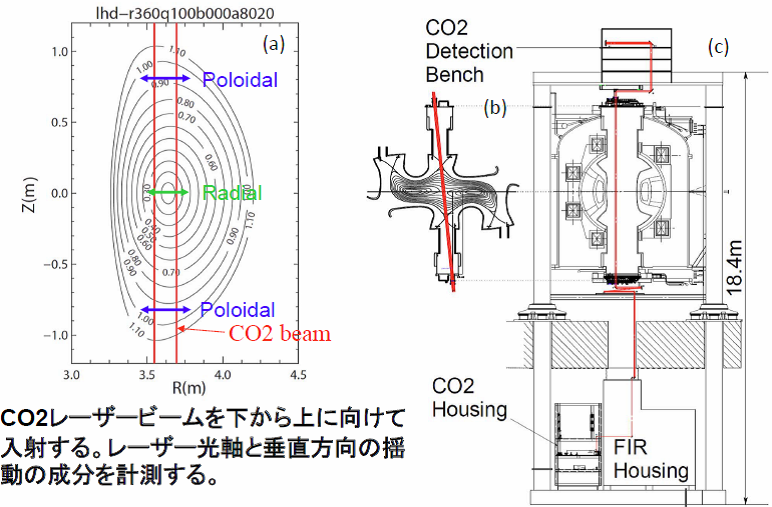
While the phase contrast method successfully resolves minute fluctuation amplitudes, we face an even greater challenge: resolving the localized spatial structure of the turbulence. As visualized in Figure 6-7(b), while turbulence remains uniform parallel to the local magnetic field lines, its amplitude and characteristics vary drastically along the perpendicular radial coordinate. Resolving how these turbulent structures vary across the radial profile is essential for understanding anomalous transport. For standard interferometers, Abel inversion can reconstruct local profiles from line-integrated data, but this technique cannot be applied to turbulence. Turbulence fluctuations are propagating vector quantities, and a PCI diagnostic only records the wave components traveling perpendicular to the incident laser beam axis; this directional dependence violates the scalar symmetry required for Abel inversion. Furthermore, as indicated by the shaded rectangle in Figure 6-8, the optical scattering volume spans a length $L_v$ of more than 10 meters along the laser axis, meaning a standard setup cannot provide any spatial resolution along the beam path. To break this bottleneck, we implement another elegant trick that exploits a core geometric property of the plasma magnetic configuration.
Figure 6-10 illustrates a schematic model of the turbulent structures. The fluctuations possess an exceptionally long wavelength parallel to the local magnetic field lines (black lines) and a short wavelength in the perpendicular plane.
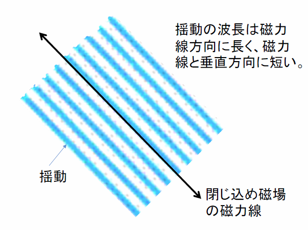
As shown in Figure 6-11(a), the laser beam is injected along the vertical axis (defined as the $z$-axis of a 3D Cartesian coordinate system). When viewed from above, the configuration matches Diagram (b). A prominent geometric feature of the LHD is that the pitch angle of the magnetic field lines (black lines) rotates drastically along the vertical $z$-axis—the field line angle varies by nearly $\pm 50$ degrees between the upper and lower boundaries of the plasma. Because the turbulent wavefronts are rigidly aligned with these field lines, the propagation direction of the turbulence also rotates by $\pm 50$ degrees along the beam path, as shown in (b). If we perform a simple line-integrated measurement through this volume, what does the detector record? As illustrated on the left side of (c), the superimposed overlapping waves form a complex cross-hatched, two-dimensional interference grid. In our 2D-PCI system, we record this 2D pattern using a high-speed $6 \times 8 = 48$ element two-dimensional detector array. By performing a 2D fast Fourier transform (FFT) on the recorded pattern, we decompose the cross-hatched grid into its individual directional wave components. Once decomposed, because the propagation angle $\theta$ of each component is strictly perpendicular to the magnetic field line at its point of origin, we can map each wave component to its exact vertical position along the $z$-axis—provided we know the exact spatial profile of the magnetic field angles. On the LHD, because the magnetic field configuration is established entirely by external superconducting coils, we can calculate the exact pitch angle of the field lines at any given $z$-position with absolute precision. Diagram (d) displays the reconstructed wavenumber spectrum in the $x$-$y$ plane, and (e) shows its transformation into polar coordinates. Because the propagation angle $\theta$ in the $x$-$y$ plane maps uniquely to a vertical $z$-position along the beam axis, we successfully achieve high-resolution spatial localization of the turbulence profile along the line-of-sight. Figure 6-12 shows a sample analysis utilizing real experimental data from a single time slice. Our system executes this full profile reconstruction at a high frequency of once every 1 ms. The continuous temporal evolution of these localized turbulence profiles is animated in the video file for Figure 6-13.
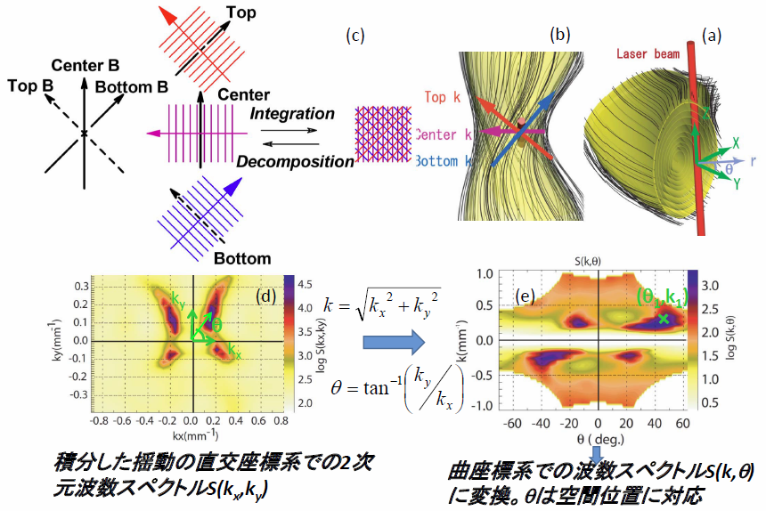
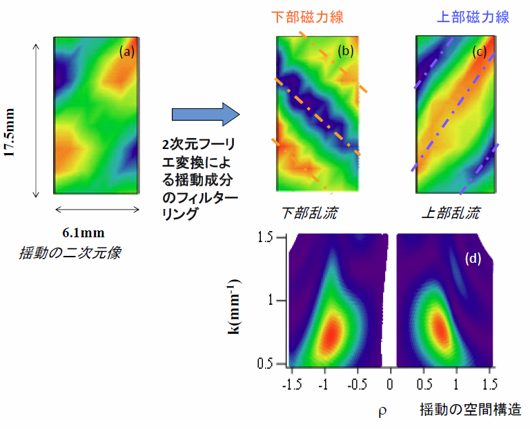
Figure 6-14(a) shows the overall layout of the 2D-PCI hardware framework, and (b) shows a close-up photograph of the advanced detector housing assembly. Despite its capability to extract an extraordinary volume of local spatial data, the optical system remains remarkably elegant and robust. Our current operational system features remote-controlled motorized lenses, allowing us to adjust the optical magnification and adapt the wavenumber measurement range remotely during experimental campaigns.
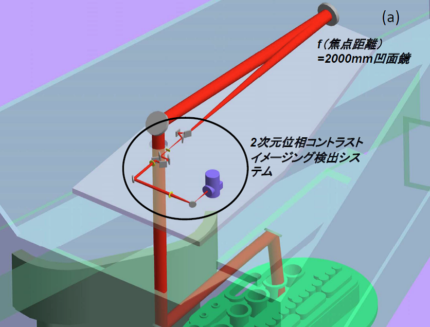
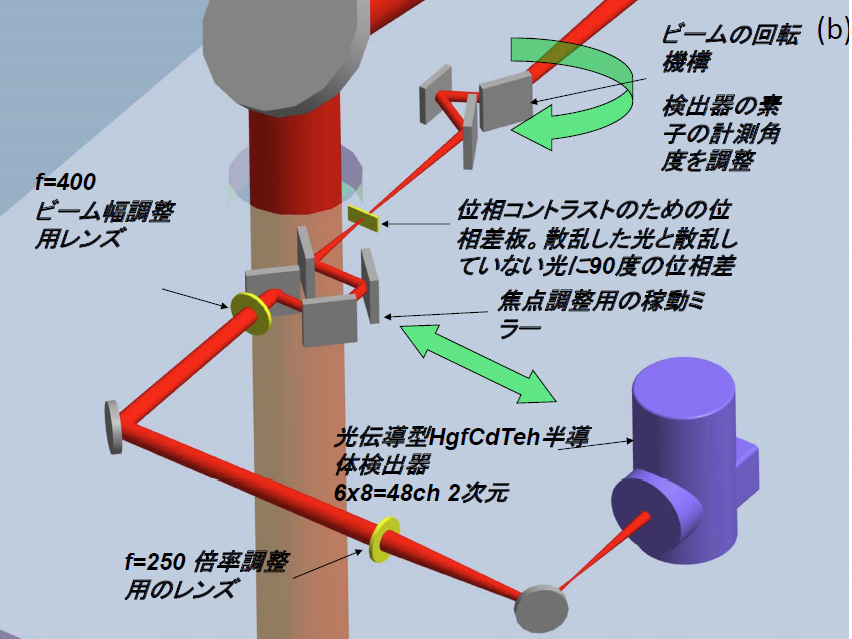
To conclude this section, let us examine a major physical discovery achieved using the 2D-PCI diagnostic. Figure 6-15 displays the waveforms of a high-performance "high ion temperature" discharge, designed specifically to maximize core ion temperatures on the LHD. As shown in (a) and (b), the intensive injection of high-power neutral heating beams successfully raises both the electron temperature and ion temperature to extreme levels. Using the 2D-PCI, we recorded and compared the core turbulence characteristics between two distinct phases of this discharge: the baseline phase prior to the temperature rise (low $T_i$ phase at $t=1.84\,\text{s}$) and the peak phase featuring a highly elevated ion temperature (high $T_i$ phase at $t=2.24\,\text{s}$).
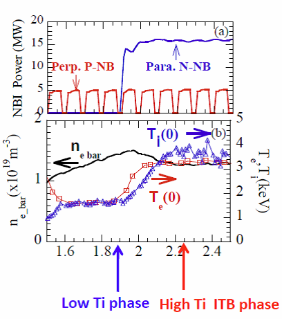
Figure 6-16 compares the spatial profiles of local ion temperature, electron temperature, electron density, and the corresponding micro-turbulence spectra between the low $T_i$ and high $T_i$ phases.
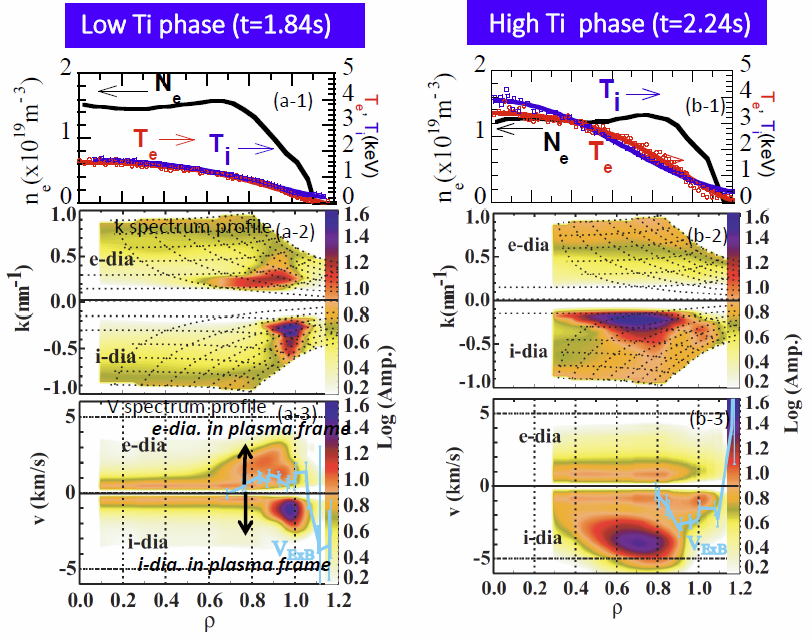
The horizontal axis $\rho$ represents the normalized radial coordinate identical to Figure 6-7(a), where $\rho=0$ defines the magnetic axis and $\rho=1$ defines the last closed magnetic surface stabilizing the core plasma. The coordinates are marked in increments of 0.1 out to 1.1, mapping directly to the geometric nested contours shown in Figure 6-9(a). As shown in profiles (a-1) and (b-1), both $T_e$ and $T_i$ reach their maximum values at the magnetic axis ($\rho=0$) and form steep, bell-shaped profiles toward the center. In contrast, the electron density ($n_e$) exhibits a flat, slightly hollow profile across the core. Following the intensive beam heating in the high $T_i$ phase, the core density decreases slightly due to particle pump-out, but both $T_e$ and $T_i$ experience an extraordinary surge. Let us analyze how the micro-turbulence responds during this confinement transition. Contours (a-2) and (b-2) map the local turbulence wavenumber spectrum across the radial profile. Wavenumber $k$ is inversely proportional to the turbulent wavelength $\lambda$, defined as $k = 2\pi/\lambda$; these contours reveal exactly what turbulent scales exist at each radial position. Contours (a-3) and (b-3) display the radial distribution of the turbulence phase velocity ($\omega/k$, where $\omega$ is the angular frequency and $k$ is the wavenumber). The turbulent eddies propagate perpendicular to the magnetic surfaces shown in Figure 6-9(a). Bounded by this 3D geometry, propagation in the direction that reinforces the natural magnetic drift is called the "ion diamagnetic direction," while propagation in the opposite direction is called the "electron diamagnetic direction." Plasma turbulence is driven by thermodynamic gradients (temperature gradients or density gradients), and the specific type of gradient driving the mode dictates its core physical properties—such as what mechanisms destabilize it or what shear profiles stabilize it. Because different turbulence modes (e.g., ITG or TEM) exhibit distinct wavenumber ranges and propagation directions, tracking the wavenumber spectra and phase velocities is scientifically vital. Furthermore, because the bulk plasma column itself is often rotating rapidly, the real physical parameter we must evaluate is the turbulence propagation velocity relative to the rotating plasma frame. The bulk plasma rotation is governed by the $\mathbf{E} \times \mathbf{B}$ Lorentz force, indicated by the solid blue lines in (a-3) and (b-3). Evaluating the net propagation velocity and direction relative to this $\mathbf{E} \times \mathbf{B}$ baseline provides the key to identifying the active instability mode. The contour lines in (a-2), (b-2), (a-3), and (b-3) represent the local turbulence amplitude plotted on a logarithmic scale.
Remarkably, as the plasma transitions into the high $T_i$ phase featuring elevated core temperatures, the spatial region where the turbulence amplitude peaks shifts drastically: while it peaks at a peripheral position of $\rho=0.9$ during the low $T_i$ phase, it relocates inward to $\rho=0.7$ during the high $T_i$ phase, as shown in contours (b-2) and (b-3). Concurrently, the turbulence phase velocity undergoes a significant increase. These experimental observations show excellent agreement with the theoretical properties predicted by advanced gyrokinetic numerical simulations led by Professor Hideo Sugama's group at NIFS. For rigorous details on these comparative studies, please consult References [26] through [28].
It is important to remember that the 2D-PCI system specifically measures the turbulent fluctuations of the electron density. To achieve a complete understanding of anomalous transport, evaluating turbulent fluctuations of temperature and electrostatic potential is also vital, especially for energy confinement. However, measuring temperature or potential fluctuations inside a high-temperature core plasma is an extraordinary diagnostic challenge compared to density; consequently, the vast majority of experimental turbulence studies worldwide are executed by utilizing electron density fluctuations as a primary proxy.
Our $\mathrm{CO_2}$ laser imaging interferometer and 2D-PCI systems have been developed and optimized through a long-term, highly successful international research collaboration with Professor Leonid Vyacheslavov and Dr. Andrei Sanin from the Budker Institute of Nuclear Physics in Russia, and Dr. Clive Michael from the Australian National University.
6-3. Microwave Collective Thomson Scattering
When researchers in the nuclear fusion community hear the term "Thomson scattering," they almost automatically think of non-collective (incoherent) Thomson scattering systems used to measure electron temperature and density profiles. While incoherent Thomson scattering is standard equipment on almost every major fusion device, collective Thomson scattering (CTS) systems designed to measure bulk ion temperatures and ion densities are extraordinarily rare, with only two operational setups existing worldwide. The first was developed by the Technical University of Denmark and operates on the ASDEX Upgrade tokamak in Germany. The second is the advanced system we are developing on the LHD. This LHD CTS project is driven through a close collaboration with Professor Shin Kubo and Professor Takashi Shimozuma from the Microwave Heating Group at NIFS, alongside Associate Professor Masaki Nishiura from the University of Tokyo.
Figure 6-17 illustrates the fundamental difference between the nuclear reactions in future commercial reactors and current experimental devices. As discussed on the "Large Helical Device" page, realizing commercial fusion power requires sustaining steady-state fusion reactions, which demands confining a bulk **ion** temperature of 100 million degrees Celsius (10 keV) and an ion density of $1 \times 10^{20}\,\text{m^{-3}}$ for several seconds. Therefore, from a diagnostic perspective, tracking the parameters of the heavy ions is far more critical than tracking the light electrons. However, directly measuring local ion temperatures deep within a high-temperature core plasma has historically been an extraordinary challenge. Because CTS can measure local core ion temperatures directly without disrupting the plasma, it drew intense interest, and development began in the 1970s. By the early 1980s, initial data was captured using high-power pulsed far-infrared (FIR) lasers. However, those early setups suffered from an insufficient signal-to-noise ratio (SNR), failing to achieve the measurement precision required for detailed physical analysis. Subsequently, in the mid-1980s, a completely different method called Charge Exchange Spectroscopy (CXS) was invented, which utilizes diagnostic neutral beam injection systems. CXS measures the local ion temperature by tracking the Doppler broadening of light emitted from impurity ions (typically fully stripped carbon ions). While CXS measures the temperature of impurity ions rather than the primary fuel bulk ions ($\mathrm{H^+, D^+, T^+}$), the two ion species remain in close thermal equilibrium, meaning their temperatures are practically identical. Furthermore, while a CTS system faces immense technical difficulties in capturing multiple spatial channels simultaneously, a CXS diagnostic can easily record an extensive spatial profile (the current LHD CXS system records roughly 80 spatial points simultaneously). Consequently, CXS quickly became the dominant mainstream tool for ion temperature profile measurements, and CTS development was largely sidelined. However, in the 1990s, a revolutionary proposal revitalized the field: implementing CTS to diagnose high-energy "fast ions" (in modern experiments, fast ions originate from high-energy neutral beam injection or ion cyclotron heating; in future commercial reactors, they will be the alpha particles generated by the fusion reactions, as shown in Figure 6-17).
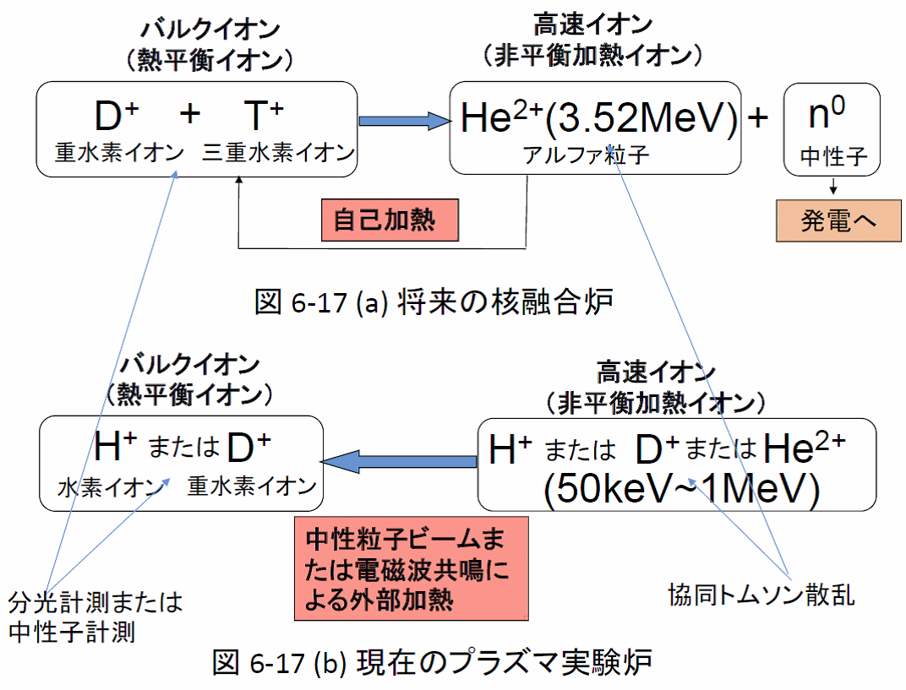
Initially, CTS systems implemented high-power pulsed FIR lasers operating at a wavelength of approximately $0.4\,\text{mm}$. However, since the 1990s, high-power microwave oscillators called "gyrotrons"—originally developed at millimeter wavelengths ($2 \sim 5\,\text{mm}$) to drive electron cyclotron heating and breakdown—matured rapidly, and researchers began adapting them as high-power sources for CTS diagnostics. Because the optical scattering cross-section scales with the square of the source wavelength, moving to millimeter microwave wavelengths yields a dramatic surge in the raw scattered signal strength compared to short-wavelength lasers. This represents a massive engineering advantage, but it introduces a major challenge: in the millimeter microwave regime, the high-temperature plasma acts as an intense noise source, emitting powerful electron cyclotron emission (ECE). To isolate the weak scattered signal from this intense ECE background noise, we modulate the gyrotron source to cycle On and Off at a high frequency. When the gyrotron is On, the receivers record the combined scattered signal + ECE background noise; when the gyrotron is Off, they record only the pure ECE noise. By subtracting the Off-phase data from the On-phase data, we successfully extract the pure scattered signal. Beyond the dramatic increase in signal strength, implementing microwaves allows for larger scattering angles, which shortens the length of the scattering volume (the intersection rhomboid shown in Figure 6-8) and yields excellent local spatial resolution. However, during the 1990s, stable, high-power gyrotrons were exceptionally rare, and the initial attempt to implement a fast-ion CTS system on the large JET tokamak in the UK faced severe hardware failures. The project initially implemented a gyrotron manufactured by an American corporation, but the unit failed to operate reliably, forcing the contractor to pay a formal penalty and withdraw from the project. Subsequently, a gyrotron manufactured by a Russian institution was installed, which operated flawlessly immediately upon installation. Researchers involved at the time remarked that the American gyrotron behaved like a high-maintenance, fragile princess who refused to cooperate despite constant attention, whereas the Russian unit behaved like a robust, hard-working farmer. To continue this analogy, the modern gyrotrons we implement today are high-performance Japanese units that execute their tasks with absolute precision—essentially the scientific equivalent of a dedicated, tireless corporate salaryman.
Identical to non-collective Thomson scattering, a CTS diagnostic extracts the temperature from the Doppler broadening of the scattered spectrum and evaluates the density from the integrated spectral intensity. Figure 6-18 illustrates a computed sample of a typical CTS spectrum. This calculation modeling assumes an LHD plasma with an electron temperature $T_e = 5\,\text{keV}$, a bulk ion temperature $T_i = 5\,\text{keV}$, a fast ion effective temperature $T_{i,\mathrm{fast}} = 180\,\text{keV}$, a bulk ion density equal to the electron density $= 1 \times 10^{19}\,\text{m^{-3}}$, and a fast ion density $n_{i,\mathrm{fast}} = 1 \times 10^{17}\,\text{m^{-3}}$, diagnosed by injecting a 77 GHz gyrotron beam. The horizontal axis represents the frequency shift relative to the incident 77 GHz source frequency. Because a CTS diagnostic records scattering from the electron cloud tracking the ion fields, the raw signal inevitably contains an electron feature component (indicated by the red line). Superimposed on top of this are the narrow bulk ion feature (indicated in light blue) and the broad, wide-stretching fast ion feature (indicated in green), which combine to form the total composite spectrum recorded by our receivers (indicated by the purple line).
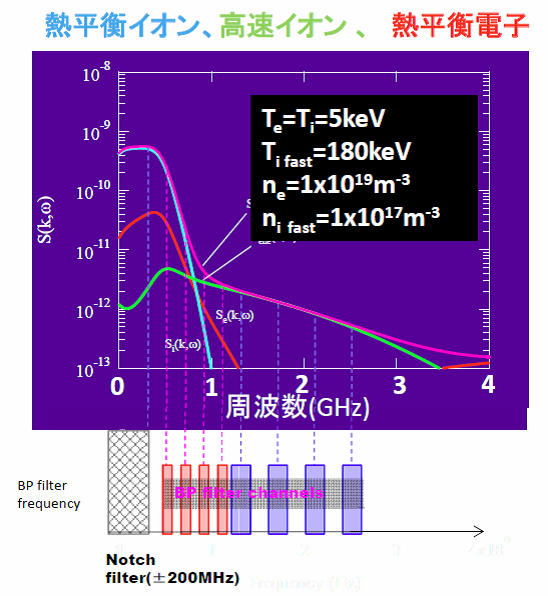
This scattered spectrum is resolved across distinct frequency bins using a specialized microwave circuit called a "filter bank." However, near the central 0-frequency shift, a massive amount of unshifted microwave power reflects off the vacuum vessel walls and enters the receiver antennas; this is called "stray light." Because the scattered signal is extremely weak, a high-repetition notch filter must be integrated into the receiver circuit to completely block this central stray light; without this notch filter, the intense unshifted gyrotron power would instantly destroy the delicate microwave components and mixers.
Figures 6-19 and 6-20 illustrate the layout of the microwave CTS diagnostic system on the LHD. While Figure 6-19 shows a backscattering layout where the scattered microwaves travel back toward the injection side, the actual positions of the injection and receiver antennas can be adjusted dynamically to adapt the scattering geometry for different physics requirements. The weak scattered signal collected by the receiver antenna is mixed with a stable 72 GHz local oscillator signal. Although the raw CTS spectrum spans a wide range of $\pm 5\,\text{GHz}$ around the 77 GHz source, this heterodyne mixing shifts the intermediate frequency down to a manageable range of $5 \pm 5\,\text{GHz}$ (identical to the heterodyne principle used in our interferometers). Consequently, the signal processing system only needs to handle frequencies from 0 to 10 GHz. As illustrated in Figure 6-20, this 0–10 GHz intermediate signal is split across 32 separate channels using a filter bank, resolving the bulk ion feature in 100 MHz steps and the wide fast-ion feature in 200 MHz steps. In addition to this filter bank system, we operate an ultra-high-speed digital sampling system (digitizer) capturing data at 10 to 20 GHz to record the raw waveform directly and calculate the pristine Fourier spectrum. While this high-speed digitizer extracts exceptional spectral detail, current hardware memory limits restrict its data capture duration to a short window of 80 ms per discharge.
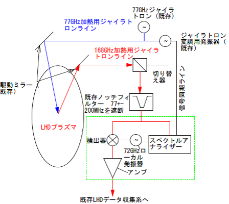
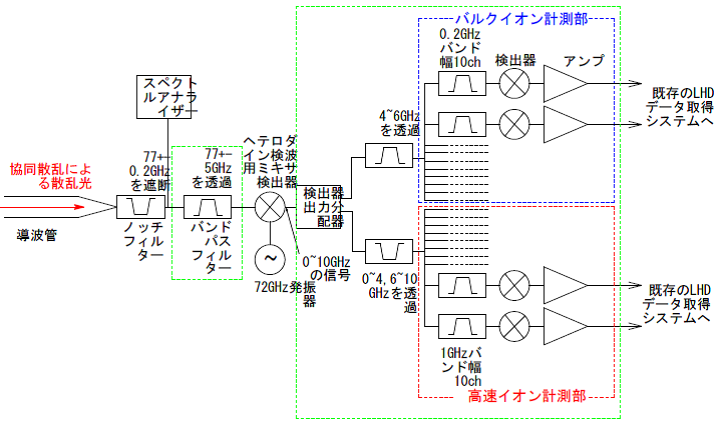
Figure 6-21 shows actual experimental results recorded by our microwave CTS diagnostic on the LHD. Graph (f) illustrates the real-time evolution of the scattered spectrum resolved by the filter bank channels. At $t = 5.05\,\text{seconds}$, one of the high-energy neutral beam injector units terminates its injection, and the width of the scattered spectrum immediately narrows following this boundary. This clear spectral narrowing visually captures the rapid reduction of core fast ions when the heating beam is shut down. Detailed physical modeling and analysis of these datasets are reported in Reference [31].
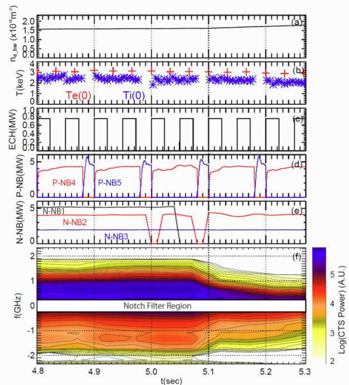
6-4. Future Research Topics
Every diagnostic system under operation faces distinct engineering challenges to further enhance its measurement precision. For the $\mathrm{CO_2}$ laser imaging interferometer, our primary goal is to upgrade the vibration compensation algorithms to enable reliable profile measurements in ultra-low-density regimes, and to boost phase resolution to capture low-amplitude macroscopic electromagnetic modes. For the 2D-PCI system, we are focusing on optimizing the signal-to-noise ratio (SNR) to capture minute turbulence signatures and establishing a reliable methodology for the absolute intensity calibration of density fluctuations. Furthermore, in collaboration with the Swiss Federal Institute of Technology in Lausanne (EPFL), we are conducting engineering feasibility studies to deploy our advanced $\mathrm{CO_2}$ laser phase contrast imaging architecture on the major JT-60SA superconducting tokamak in Naka, Ibaraki Prefecture. For the CTS diagnostic, we are actively developing a next-generation high-frequency receiver system operating at 154 GHz, designed to minimize microwave refraction and eliminate background ECE noise in high-density regimes. Although not covered on this page, we are also expanding the CTS framework to achieve direct measurement of the local density ratio between multiple ion species (isotope ratio diagnostics). Each of these fields offers rich, independent research topics for graduate theses.
Alongside hardware engineering and diagnostic development, we will continue driving advanced plasma physics research using these unique instruments. The LHD project has successfully transitioned into high-performance deuterium experimental campaigns. Investigating how confinement performance, microscopic turbulence, macroscopic instabilities, bulk ion profiles, and fast ion transport dynamics vary when transitioning from light hydrogen to deuterium fuel stands as our primary and most exciting research frontier.
While this Japanese version of our website focuses primarily on introducing the technical and engineering principles of our diagnostics, detailed reports on our plasma physics discoveries are covered extensively on our English pages. For those who wish to explore our scientific findings further, please refer to the English section or consult the peer-reviewed references listed below.
6-5. Acknowledgments of Financial Support
Our microwave collective Thomson scattering project has been funded through the Grants-in-Aid for Scientific Research (1) through (5) listed below from the Japan Society for the Promotion of Science (JSPS). Concurrently, our $\mathrm{CO_2}$ laser imaging interferometer and 2D-PCI systems are funded through Grant (5). We gratefully acknowledge this vital financial support.
- FY2008–2009: Grant-in-Aid for Scientific Research on Innovative Areas (Publicly Offered Research), "Burning Plasma Diagnostics: Development of Collective Scattering Diagnostics Utilizing a Gyrotron Source" (Principal Investigator: Shin Kubo).
- FY2009–2011: Grant-in-Aid for Scientific Research (B), "Development of Fast Ion Diagnostic Methodologies via Collective Thomson Scattering Utilizing a High-Power Microwave Source" (Principal Investigator: Kenji Tanaka).
- FY2012–2015: Grant-in-Aid for Scientific Research (B), "Advanced Optimization of Microwave Collective Thomson Scattering and New Horizons in Fast Ion Physics" (Principal Investigator: Kenji Tanaka).
- FY2013–2015: Grant-in-Aid for Challenging Exploratory Research, "Proposal of Advanced Fuel Ion Ratio Diagnostics in High-Temperature Plasmas Utilizing Millimeter-Wave Scattering" (Principal Investigator: Masaki Nishiura).
- FY2016–2018: Grant-in-Aid for Scientific Research (B), "Confinement Ion Measurement and Anisotropic Loss Mechanisms Uncovered Through High-Performance Microwave Collective Thomson Scattering" (Principal Investigator: Kenji Tanaka).
References
- K. TANAKA, K. KAWAHATA, T. TOKUZAWA, T. AKIYAMA, M. YOKOYAMA, M. SHOJI, C. A. MICHAEL, L. N. VYACHESLAVOV, S. MURAKAMI, A. WAKASA, A. MISHCHENKO, K. MURAOKA, S. OKAJIMA, H. TAKENAGA, and LHD EXPERIMENT GROUP, “Particle Transport of LHD”, FUSION SCIENCE AND TECHNOLOGY Vol. 58, JULY/AUG. 2010, pp.70-90
- Kenji TANAKA, Clive MICHAEL, Leonid VYACHESLAVOV, Andrei SANIN, Kazuo KAWAHATA, Shigeki OKAJIMA, Takeshi AKIYAMA, Tokihiko TOKUZAWA and Yasuhiko ITO, “Improvements of $\mathrm{CO_2}$ Laser Heterodyne Imaging Interferometer for Electron Density Profile Measurements on LHD”, Plasma and Fusion Research, Vol. 2 (2007) pp. S1033-1-S1033-5
- K. Tanaka, A. L. Sanin, L. N. Vyacheslavov, T. Akiyama, K. Kawahata, T. Tokuzawa, Y. Ito, S. Okajima, “Precise Density Profile Measurements by using a Two Color YAG/$\mathrm{CO_2}$ Laser Imaging Interferometer on LHD”, Review of Scientific Instruments, Vol. 75, No. 10 (2004) pp.3429-3433
- K. TANAKA, K. KAWAHATA, T. TOKUZAWA, T. AKIYAMA, M. YOKOYAMA, M. SHOJI, C. A. MICHAEL, L. N. VYACHESLAVOV, S. MURAKAMI, A. WAKASA, A. MISHCHENKO, K. MURAOKA, S. OKAJIMA, H. TAKENAGA, and LHD EXPERIMENT GROUP, “Particle Transport of LHD”, FUSION SCIENCE AND TECHNOLOGY Vol. 58, JULY/AUG. 2010, pp.70-90
- K. Tanaka, C. Michael, A.L. Sanin, L.N. Vyacheslavov, K. Kawahata, S. Murakami, A. Wakasa, S. Okajima, H. Yamada, M. Shoji, J. Miyazawa, S. Morita, T. Tokuzawa, T. Akiyama, M. Goto, K. Ida, M. Yoshinuma, I. Yamada, M. Yokoyama, S. Masuzaki, T. Morisaki, R. Sakamoto, H. Funaba, S. Inagaki, M. Kobayashi, A. Komori and LHD experimental group, “Experimental study of particle transport and density fluctuations in LHD”, Nuclear Fusion 46 (2006) pp.110-122
- T.-H. Watanabe, H. Sugama and S. Ferrando-Margalet, “Gyrokinetic simulation of zonal flows and ion temperature gradient turbulence in helical systems”, Nuclear Fusion 47 (2007) 1383-1390
- K. Tanaka, C. A. Michael, L. N. Vyacheslavov, A. L. Sanin, K. Kawahata, T. Akiyama, T. Tokuzawa, and S. Okajima, “Two-dimensional phase contrast imaging for local turbulence measurements in large helical device”, Review of Scientific Instruments 79 (2008), pp. 10E702-1-10E702-7
- L.N. Vyacheslavov, K. Tanaka, A.L. Sanin, K. Kawahata, T. Akiyama, “Imaging of Turbulence Structure on LHD Using 2D-Phase Contrast”, 4th Triennial Special Issue of the IEEE Transactions on Plasma Science, Vol. 33, No. 2, pp.464-465
- Kenji TANAKA, Clive MICHAEL, Leonid VYACHESLAVOV, Hisamichi FUNABA, Masayuki YOKOYAMA, Katsumi IDA, Mikiro YOSHINUMA, Kenichi NAGAOKA, Sadayoshi MURAKAMI, Arimitsu WAKASA, Takeshi IDO, Akihiro SHIMIZU, Masaki NISHIURA, Yasuhiko TAKEIRI, Osamu KANEKO, Katsuyoshi TSUMORI, Katsunori IKEDA, Masaki OSAKABE, Kazuo KAWAHATA and LHD Experiment Group, “Turbulence response in the high $T_i$ discharge of the LHD”, Plasma and Fusion Research, Vol. 5 (2010) pp. S2053-1-S2053-10
- Masanori Nunami, Tomo-Hiko Watanabe, Hideo Sugama, and Kenji Tanaka, “Linear Gyrokinetic Analyses of ITG Modes and Zonal Flows in LHD with High Ion Temperature”, Plasma and Fusion Research 6 (2011) 1403001-1-1403001-8
- M. Nunami, T. Watanabe, H. Sugama, K. Tanaka, “Gyrokinetic turbulent transport simulation of a high ion temperature plasma in large helical device experiment”, Physics of Plasmas, 19, 4 (2012) 042504-1
- A. Ishizawa, T.-H. Watanabe, H. Sugama, M. Nunami, K. Tanaka, S. Maeyama and N. Nakajima, “Turbulent transport of heat and particles in a high ion temperature discharge of the Large Helical Device”, Nuclear Fusion 55 (2015) 043024
- M. Nishiura, K. Tanaka, S. Kubo, T. Saito, Y. Tatematsu, T. Notake, K. Kawahata, T. Shimozuma, and T. Mutoh, “Design of collective Thomson scattering system using 77 GHz gyrotron for bulk and tail ion diagnostics in the large helical device”, Review of Scientific Instruments 79 (2008) 10E731-1-10E731-3
- K. Tanaka, M. Nishiura, S. Kubo, T. Shimozuma and T. Saito, “Progress of microwave collective Thomson scattering in LHD”, Proceeding of 17th International Symposium on Laser Aided Plasma Diagnostics (LAPD17), Gateaux Kingdom Sapporo, Hokkaido, Japan, September 27-October 1, 2015, Journal of Instrumentation C12001
- M. Nishiura, S. Kubo, K. Tanaka, R. Seki, S. Ogasawara, T. Shimozuma, K. Okada, S. Kobayashi, T. Mutoh, K. Kawahata, T. Watari, LHD experiment group, T. Saito, Y. Tatematsu, S. B. Korsholm, M. Salewski, “Spectrum response and analysis of 77-GHz band collective Thomson scattering diagnostic for bulk and fast ions in LHD plasmas”, Nuclear Fusion 54 (2014) 023006